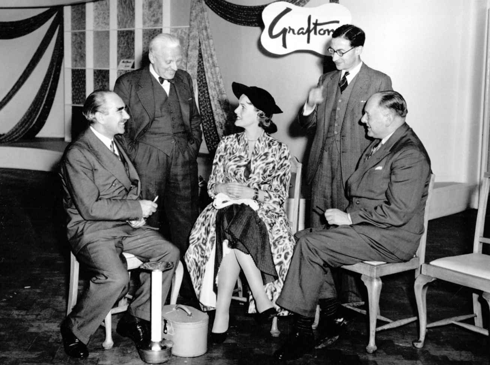
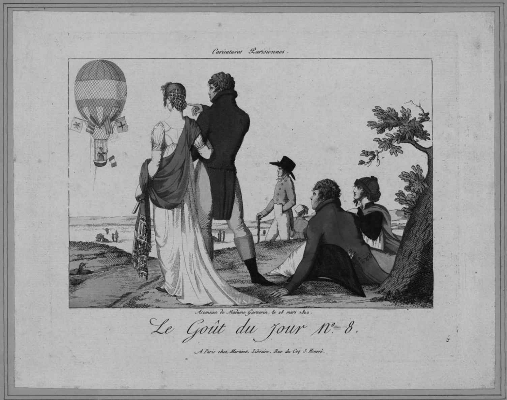
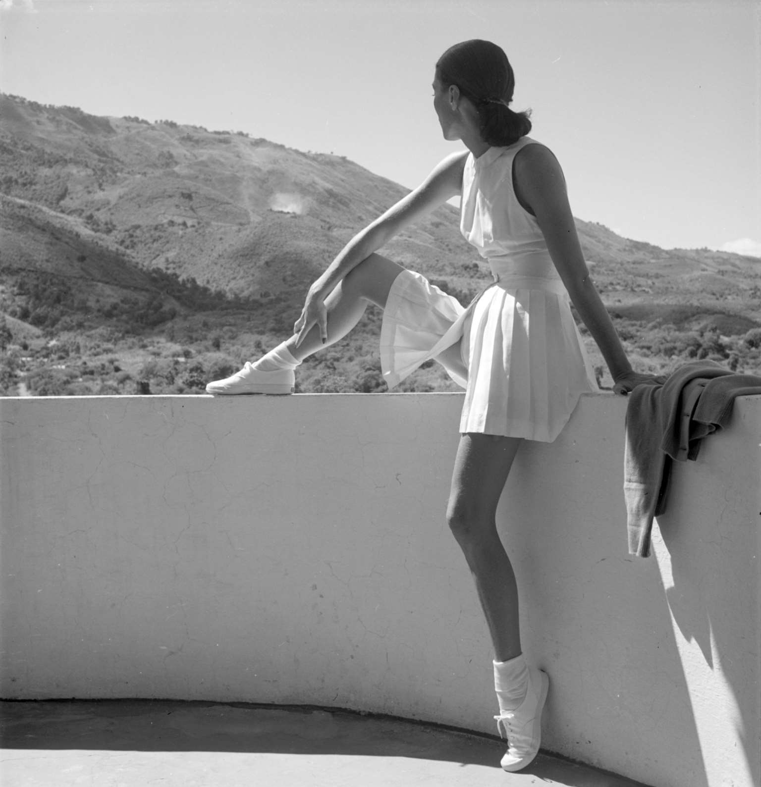

1954年，英国人丹尼斯· 尚德导演了一部短片《一条裙子的诞生》（Birth of a Dress ）。影片开头取景于伦敦街头恣意陈设着时髦成衣的商店橱窗。随着镜头扫过这些橱窗外层锃亮的玻璃，旁白评论起英国女性极为丰富且触手可及的时装，并认为高级时装就是成衣设计的灵感来源。镜头紧接着特写了一件修身酒会礼服，裙身一侧荷叶边缀至裙摆，传达出1950年代晚装的韵味。片中介绍道，这条裙子首先由伦敦著名设计师迈克尔· 谢拉德设计，经过改良后成了一件能够大批量生产的服装，使“街头普通女性”也能轻松购买。影片随后详细地展示了整个生产过程。时尚媒体通常选择回避服装制造这一产业化背景，而《一条裙子的诞生》赞美了英国的制造与设计奇迹，这些都参与到一条裙子的生产之中。这部影片由英国煤气委员会与西帕纺织公司赞助拍摄，揭开了一系列生产工厂的面纱，在那里用于服装制造的棉花被漂白以作备用。观众跟随镜头进入面料工厂设计织物印花的艺术家工作室，本片拍摄的是一款以炭笔描绘的传统英式玫瑰纹样。之后蚀刻工艺将印花图样转刻到滚筒上，科学实验室则开发出了苯胺染料（油气工业的副产品之一），然后工厂印制出大量面料，如此种种都在影片中得到了傲人的展示，以作为英格兰北部工业技艺与创造力的证明。
镜头接下来转到了迈克尔· 谢拉德在伦敦梅菲尔富人区的精致沙龙，在这里迈克尔以这一印花面料为灵感，设计出一件晚礼服。以迈克尔的设计为基础，北安普顿工厂里的成衣设计师重新改良了这条裙装使其能够大批量生产。他们简化了设计，最终以三色印刷工艺推出一款时髦礼服，并通过一场时装秀向来自世界各地的买手进行了展示。通过镜头记录，影片让观众关注到女性身上时髦衣饰生产所必须历经的各个环节。这一设计离不开英国在高级时装设计和规模化时装生产中的成功，观众在镜头的带领下目睹了这些服饰是如何“与工业研究和科学发展的最新成果紧密相连的”。这部影片其实是战后一部反映英国工业发展、国家声望崛起、消费主义兴起的宣传片。它另辟蹊径，聚焦了时装的生产制造过程，将整个产业的各个方面都联结在一起，而通常它们都是以碎片呈现的：比如一件成品，设计师的概念，或者想要达到的一个目标。

图9 1954年影片《一条裙子的诞生》剧照，影片追踪了一条大批量销售的裙子从设计到制造的全过程
正如《一条裙子的诞生》展示的那样，时装业包含了一系列相互交融的产业领域，这个领域的一端聚焦生产制造，另一端关注最新潮流的推进与传播。在生产者们忙于处理技术、劳动力问题，努力实现设计商业化的同时，媒体记者、时装秀制作人、市场营销者以及造型师们将时装打造成视觉盛宴，将流行趋势传达给消费者。服装已然被这些产业深深变革，从字面上说是通过生产过程，而隐喻意义上则是通过杂志与照片。所以，时装产业不仅生产了服装，更制造出一种丰富的视觉和物质文化，给人们创设新的意义、乐趣以及欲望。
安德鲁· 戈德利、安妮· 科尔申和拉斐尔· 夏皮罗在他们关于这一产业发展的文章中指出，时装是建立在变化之上的。时装天生就是不稳定的、季节性的，时装产业的每一个方面都在不停地寻找调和这一不可预知性的方法。流行预测机构提前数年发布面料、主题等板块的流行趋势，用以引导、启发时装生产者们。时装品牌聘请富有经验的设计师，他们在自己对流行演变的直觉和标志性的个人设计之间取得平衡，从而推出成功的服装产品。时装秀制作人与造型师会将这些服装以最引人入胜的形式展示出来，以提升品牌形象，争夺报道版面，同时吸引商场店铺下单。店铺买手依靠自己对顾客特点、店铺零售形象的掌握采购最有可能畅销的服饰，也进一步强化他们所代表的零售商在时尚方面的可信度。最后，时尚杂志、高级时尚书刊等时尚媒体资源将会为时装制作广告、撰写时尚评论，竭力蛊惑、抓牢读者的心。
14世纪中叶开始，时装的发展便一直基于技术和工业上的突破，并得到了长期以来对传统小规模、密集劳动方法的依赖的调和，后者保有必要的灵活性以应对季节周期性需求变化。需要强调的是，时装产业也被消费者的需求驱动着。18世纪时，面料设计和潮流风格从年度变化转为季节性变化。着装者会依当季的流行趋势来改造自己的服装，借助裁剪和配饰打造全新的效果。正如贝弗利· 勒米尔所写的，当富人们为昂贵的新款定制时装买单时，下层群体则将二手衣饰与17世纪的成衣搭配在一起。
很显然，时尚从来不仅仅是一个简单的效仿过程，无论是效仿贵族，还是后来的法国高级时装风格。虽然我们不能假设所有人都会，或者就此而言能够紧跟时尚，但消费者需求对这一产业的发展来说确实是一个影响深远的因素。从文艺复兴以来，对身份、美感以及在服装中获得乐趣（不管是触觉还是视觉上的）的渴望，都在其中发挥了作用。这一产业因而孕育出本土化、民族化和国际化的时装风格，生产者和营销者又不断努力迎合着多样化的欲望与需求。自18世纪英国年轻学徒们引导的地区性时尚潮流开始，他们通过向服装上增加装饰以脱颖而出，或者早至16世纪佛罗伦萨权贵身披的精工天鹅绒，时装业就包含了由交易员、分销商、推销者等构成的复杂链条。
时装产业的演进
文艺复兴时期的时装产业因纺织品的全球商贸往来而蓬勃发展，东西方商品相互自由交流。服装制作应用的技术逐渐成熟、优化，16世纪西班牙的裁剪教材使得更合身的剪裁成为可能。15世纪晚期，战争和贸易使得不同服饰风格在西方世界扩散，其中勃艮第宫廷的浅色风格占据主流，而深色系的西班牙风格则在接下来的一个世纪里不断传播。这种种潮流都是消费者对奢华和炫耀的欲望的一部分，等到17世纪路易十四对法国纺织品交易施行了制度规定，这种欲望开始变得正式化。这一举措不但巩固了已有好几个世纪历史的纺织品生产与全球贸易网络，法国最高统治者所采取的这些行动同时也认可了时装不仅能够塑造民族身份，还可以影响它的经济财富。于是，这一需要在不久后见证了巴黎高级时装公会的早期雏形于1868年成立，为的就是监督巴黎的高级时装产业。与之对应的是，新兴工业化国家也在持续不断地建设着自己的时装和制衣产业，墨西哥的生产力在1990年代的提升就是一个很好的例证。
17世纪见证了里昂的丰富面料、巴黎的奢侈品贸易、伦敦的成衣业日渐得到认可和巩固，它们凭借小规模的服装制作，依托专注传统技艺的小型工作室、家庭作坊快速发展。这些生产带动了本地富裕阶层和旅游观光者对时装的消费，它们也是成衣制造的早期尝试，在未来会给时装产业带来更广泛的影响，也就是让更多的人穿上服装，产生更多的经济利益，时装产业也最终发展成为一个重要的国际经贸门类和一股强大的文化力量。
军需生产为成衣产业发展提供了极大的动力。“三十年战争”（1618—1648）期间建立起了一支庞大的军队，军品工厂与外包制衣工坊一起为军人生产制服。18世纪及后来的拿破仑战争时期，这类生产进一步扩大。早期的成衣生产主要是毫无个性的服装，例如给海员制作宽大的工作服，裤腿肥大通常是他们衣着的特点，还有为奴隶生产的基本服装。尽管本身并非时装制造，这些生产活动还是为即将出现的成衣产业提供了必要的先决条件。
美国作为独立国家的崛起在成衣产业的发展中扮演了一个至关重要的角色。1812年，美国军队服装公司在费城开业，成为最早一批成衣生产商之一。伴随美国内战带来的巨大的军服需求，还有淘金热给李维斯带来的牛仔生意，一个基于生产方式和服装尺码标准化程度更高的产业兴起了。克劳迪娅· 基德韦尔在她的书中指出，19世纪末人们对成衣的态度出现了一种与之对应的变化。成衣不再被当作拮据和底层身份的表征。城市化不断推进，城市工人和居民需要买得起的服装，并且要“跟主流时装看上去没有多大差别”。城市之中更多时尚潮流随处可见，人们期望自己在人潮之中与众不同的愿望，成为驱动成衣产业的另一股力量。
需求总是和创新紧密相连。珍妮纺纱机（约1764年）提高了面料生产速度，提花织机（1801）使更复杂的织物设计成为可能。然而，正是合理的尺码标准体系的形成使得高效的大规模生产成为可能，也使得时装产业从19世纪中叶开始更加发展壮大。举个例子，根据菲利普· 佩罗的著述，截至1847年巴黎共有233家成衣生产商，雇员规模达7000人；而在英国，据1851年的调查，服装贸易雇用的女性数量位列第二，仅次于家政服务。从这一点看，女士成衣产业同样也在发展，与早期男士成衣的情况类似，女士成衣主要是斗篷这类的宽松服装。
胜家公司于1851年投入市场的缝纫机，有时被看作成衣行业发展的革命性因素。然而，直到1879年蒸汽或燃气驱动的缝纫机往返摆梭被发明出来，服装生产的速度和简易性才得到大幅度提升。安德鲁· 戈德利曾有记录，一名熟练的裁缝每分钟能够缝制35针。但到了1880年，动力驱动式缝纫机能够每分钟完成2000针，而到1900年这一速度已经攀升到每分钟4000针。技术的进一步革新，例如裁剪和熨烫技术的改良，在极大缩短生产时间的同时也减轻了生产者和消费者的成本负担。
1880年代从俄国种族迫害之下出逃的大量移民，给英美两国的成衣产业增添了更多动力，犹太裁缝和企业家也成为时装产业发展的重要力量。例如，伊莱亚斯· 摩西（Elias Moses）在广告中号称自己是“伦敦第一制衣……开创了成衣新纪元”，而后又宣称“当前的制衣速度和火车一样迅捷”。摩西把自身行业效率飙升的技术和更为迅猛的交通方式类比，确实再贴切不过。火车路网不仅加快了贸易和分销，更打开了传播的可能性，将时装潮流扩散到各个阶层甚至不同国家之间。
从19世纪中叶妇女们头戴的用来遮挡海边阳光的黑纱，到越来越受欢迎的舒适的男式西装便服，旅行度假服饰及运动休闲时装促进了成衣产业的蒸蒸日上。19世纪最后四分之一的日子里，女性开始进入白领职场，她们迫切需要适合公共场合的新款服装。作为女性着装原型模式的“裁缝定制”也在1880年代得到了新的发展。穿上了女士衬衫的新女性们代表了一种全新的风格，在此背后19世纪末不同性别群体中众多的新时装风格蓬勃兴起。确实，美国制造的“仿男士女衬衫”在1890年代之初就已经风靡，证明了消费者需求与供应商创新之间的紧密关联，它不断驱动着时装产业向前发展。
如果说18世纪见证了点燃大众对时装欲望的西方消费文化的发展，那么19世纪则将这种对新奇与感官体验的热爱转变为遍及全球的视觉和商贸狂潮。发明家们接连开发出大批量生产的裙衬、束身内衣、裙撑等一个又一个专利产品，用最新的技术重塑着女性的身体；橡胶、赛璐珞材质的出现，给渴望拥有精致绅士风度的年轻男性提供了既可以轻松负担又容易打理的洁白领子与袖口；苯胺染料的出现意味着织物可以大胆地将科学革新与时尚融合起来。
成衣产业加速发展的同时，高级时装业也越来越多地习得了商业往来中的博弈伎俩。露西尔和沃思等代表性设计师以及主要的几家百货公司所使用的宣传策略，尤其是时装秀，发挥了巨大作用，将各种流行风格的华美形象广泛传播。这些展示活动在市场的各个层级传播并造成影响，也给想要将最新潮流改造为符合自身价位的生产商们提供了模仿的样板。美国买家尤其热衷于挖掘高级时装真品气质中的商业潜力。他们花钱参加各场时装秀，与卖家达成协议后采购一定数目的服饰，然后根据这些服饰生产限定批量的复制品。如在17世纪之时，“巴黎”就是奢华的同义词，这个城市的名字出现在各式广告、专题报道之中，被世界各地无数的商铺和品牌放在自己的名号里，以作为时尚可信性的标志。巴黎代表了优雅和旧世界的奢华，当其他城市努力打造能在国内国际市场上畅销的特色时尚风格时，巴黎也为它们的服装产业提供了一种发展范式。
至19世纪末，时尚作为服装产业的一股主要推动力不断勃兴，它把流行服饰带给了更广泛的人群。时装一方面使得人们得以构建新的身份；另一方面，产业发展的背后是对以女性和移民群体为主的产业工人的剥削。血汗工厂是这一充满活力的现代化进程的阴影，始终挥之不去。自1860年代起，行业丑闻不断爆出，确保如期交货及低廉零售价格的逼仄空间、长时间劳动和极微薄薪水的故事一次次震惊了政府和社会民众。关于生产道德的讨论带来了大规模的工会联合，20世纪早期，限制最低薪酬的法律也得到推行。尽管在剥削劳动力问题上臭名昭彰的是致力于大规模、标准化服饰生产的服装业，时装引发的一系列争议从未中断。维多利亚时代缝制定制礼服的那些孱弱年轻女子的形象，在今天被替换成各路信息曝光中服装品牌在亚洲和南美洲雇用的童工。
时装生产商们自古就需要保持与市场的密切联系，并针对消费者对某一特定流行趋势的需求迅速做出反应，今天发达的信息网络让服装生产装配可以分包到越来越远的地方。随着20世纪渐渐远去，科技手段使得每一个服装款式的销量数据能在各个店铺的各个收银机上进行整理检点，进而能迅速向工厂下单。运输方式和分销渠道的改进进一步加速了这一过程，极大地为一批成功的国际服装巨头们增加了便利，比如瑞典的海恩斯莫里斯（H&M）、西班牙的飒拉（Zara）。这些公司能够快速响应设计师的时装系列，同时密切关注着街头流行的新兴趋势，以复制最新的高级时装，有时候甚至能抢在高级时装上市之前先推出自己的产品。这种模式同样意味着工人的工作环境更加难以保障，引发了针对高街品牌的种种指控，盖璞（Gap）的遭遇就是个例子。
现代时装产业的结构在1930年代已经确立。随着20世纪逝去，这一产业被冠上“快时尚”的名头，从前按季发布的节奏已经被打破，服饰产品如今能够不间断地出新，持续供应给各个高街时尚零售商。1920年代的高速增长为这套系统奠定了基础。那个十年见证了更大规模的投资、更大范围的国际交流，同时越来越多的迹象表明，时尚，而不是质量和功能，能够赋予服装甚至汽车更多的卖点。“大萧条”开始后，人员和财力的大量削减让人们更注重精简有效的工业生产，建设国内市场，同时在全球范围内寻求新的区域以作为目标市场，巴黎的高级时装设计师和美国的成衣生产商们，都把南美地区视为新客户的重要潜在来源地。
战后时期，消费市场和国内工业得到了进一步的巩固。在美国的支持和商业知识的帮助下，意大利和日本发展出了各自的时装产业，在时尚服装与衣橱基本款之间取得了平衡。确实，这一结合非常重要，泰莉· 艾金斯认为它对于延续一个品牌的商业生命至关重要。她断言美国设计师艾萨克· 麦兹拉西1998年不得不关闭自己的同名品牌业务，就是因为他把全部精力都放在了时尚服装上，而忽略了经典款式的需求。
这再一次证明了时装产业的善变，设计师和生产商必须考虑周全才能增加并稳定自己的市场份额。这一点体现在高级时装设计师品牌授权生产、开发的成衣产品线，以及20世纪晚期出现的成衣品牌衍生的副线上，比如高缇耶童装（Junior Gaultier）和唐可娜儿（DKNY）。这些系列依托设计师们通过各自主线打造出的光环，并借助价位更亲民、款式更基础的服饰不断拓展消费人群。
时装产业对外部投资和其他资本保障途径的需求在20世纪得到解决。英国博尔顿（Burton）男装生产并零售自有设计，使得供需两端间形成紧密的关联互动，也使公司在1929年得以上市。从1950年代晚期开始，法国时尚品牌开始上市。1980年代以来，奢侈品巨头，比如路威酩轩，旗下囊括莫杰（MarcJacobs）、路易威登（Louis Vuitton）、纪梵希（Givenchy）、凯卓（Kenzo）以及璞琪（Emilio Pucci）等品牌，将年轻品牌与老牌时装店汇合，以保证其时尚可信性，同时通过将利润分散在名酒、香水、腕表及时尚品牌等众多领域以抵御经营风险。
然而，时装产业依然有一个重要门类始终保留着几个世纪以来的规模极小、劳动密集型的经营模式。主要分布在伦敦东区的许多工作坊就是这一类型的缩影，年轻设计师加勒斯· 普、克里斯多弗· 凯恩以及马里奥斯· 施瓦布只雇用了极少量的助理来协助他们完成自己的服装系列。他们沿袭着英国设计师们自1960年代就树立起的传统，作品出色的时尚设计引起了媒体的兴趣，影响力随之远播世界各地。
时装宣传推广方式的发展
时尚媒体与广告行业紧跟着服饰生产和设计的脚步不断发展，传播着最新流行趋势，并通过影像和文字构建起种种时尚典范。毫无疑问，媒体报道能够让设计师迅速蹿红，就像普、凯恩和施瓦布那样，但它也有可能侵蚀长期发展的根基。如果设计师在职业生涯之初就过快地斩获盛名，而此时的他们还没有找到有力的资金支持，不具备与订单需求相匹配的生产能力，他们的事业便难以成长。尽管如此，媒体报道仍然被认为对于树立品牌，并最终找到来源可靠的资金投资至关重要。这样的矛盾在伦敦时装周表现得尤为明显，以中央圣马丁艺术与设计学院为代表的艺术院校不断培养出大批极有才华的设计师，但基础条件匮乏、政府投资不足又让他们的设计事业不堪一击。
20世纪下半叶，循环举办的季节性国际时装秀逐渐主导了时装产业。它们为设计师和生产商提供了一个平台，在这里他们能够按自己希望的方式展示自己的设计系列，而不是透过杂志报道的滤镜来展现。时装秀集合了全球销售终端的买手、消费高级定制时装的富有个人客户等，随着它们的发展壮大，媒体从业者和摄影师也参与进来。从19世纪末规模极小的高级时装沙龙展示开始，时装秀逐渐形成自己独特的视觉语言，不仅包括模特的动作和仪态，灯光与音乐的配合，还有用来传达各个品牌标志和追求的那些越来越精美的现场表演。
直到1990年代，时装秀的内容都是经过媒体筛选编辑后才向大众传播，不管是报纸杂志，还是后来法国时尚电视台这样的电视频道。然而到了20世纪晚期，互联网向公众提供了能够接触到未经编辑内容的途径，这些内容有时会在设计师的网站上同步直播。当下的即时性有可能打破设计师与生产商，时尚媒体、零售商和潜在客户之间原本的稳定关系。它让设计师的作品以完全不经媒体加工的本来面貌呈现给消费者，消费者可以直接购买秀中的服饰，而这些款式时尚杂志和店铺买手们则不一定会相中。
出版、广播再到现在的互联网媒体，它们构成的国际化网络凭借着戏剧化的意象创造时尚内涵，几个世纪以来不断演变。文艺复兴时期，无论本地城镇还是国外的贸易和商旅，都会带来新的时尚资讯。讽刺文同时嘲笑和赞美着时尚。一流的制衣商们设法通过散发玩偶以传播流行趋势，而这些玩偶身着的都是最新款式的正装和便服。书信往来为传播最新款式提供了一条非正式途径。确实，相比小说，简· 奥斯汀在她与姐妹的通信中留下了更多的时尚信息，详细地写到了她们帽子上新的装饰、新购置的裙子。这种近似名人逸事形态的时尚传播，在今天的网络博文中继续存在，也体现在一些内容风格个人化的小刊物里，例如专注复古风格和自制时装的杂志《邂逅》（Cheap Date ）。
17世纪，更加正式的传播方式不断演变，包括自早期展示不同国家服装的画册演化出的不定期出版的时尚杂志。不过，第一本定期发行的时尚杂志直到1770年代才正式出版。《淑女杂志》（The Lady's Magazine ）建立了整个时尚报道和形象塑造的行业。最令人印象深刻的大概是这本杂志的开本，到21世纪的今天它仍被当作范本。18和19世纪的时尚杂志的内容，既有充满谈资的社交事件，文中事无巨细地描述名流们的装束，也有给读者们的护肤化妆和着装建议，还有小说以及巴黎顶级高级时装设计师和裁缝师的各类新闻。在如何选择合适的时装、美妆，如何举止得当等问题上，时尚杂志把说教式的文章和“姐妹”般的建议融为一体，颇为有力。它们构建起“女性”的典范，不管是忠于家庭生活的强烈道德观还是对性别身份的前卫挑战，前者体现在19世纪中叶《英国女性居家杂志》（Englishwoman's Domestic Magazine ）对家务和服饰纸样的建议中，后者则出现在1980年代中期的《面孔》（The Face ）杂志里。
这些杂志很早开始就通过广告和更为隐秘的促销链跟时装工坊和生产商们保持着密切的关系。1870年代，《米拉衣装志》（Myra's Journal of Dress and Fashion ）成为社论式广告的先驱，它把广告和专题评论内容糅合在一起，在刊载玛丽· 古博夫人文章的同时配载了关于她的时装店的广告图片和评论内容。这种关系在20世纪进一步发展。1930年代，埃莉诺· 兰伯特就是最早把公关技巧应用到时装产业的那批人之一，他们认识到了多元化推广的可能。这样，媒体代表开始游说将各大品牌投放入专题文章和图片中，通过增加时尚杂志的声望来确保已有广告版面的传播效果。兰伯特还鼓励自己代理的电影明星穿着与她稳定合作的设计师的作品。1950年代，她将运动服装设计师克莱尔· 麦卡德尔的新款太阳镜系列送给著名影星琼· 克劳馥，兰伯特清楚地知道克劳馥佩戴麦卡德尔作品的照片会成为设计师产品的代言，同时也会提升明星自己的时尚影响力。
类似的互惠跨界合作巩固了时装产业的基础。19世纪晚期，伦敦的一流高级时装设计师，比如露西尔，纷纷为舞台上的顶级女主角们提供服装，以此获得免费的宣传，增加自己产品的曝光度。这种操作继续发展，设计师们开始为电影设计戏服，比如纪梵希为奥黛丽· 赫本1961年的电影《蒂凡尼的早餐》设计的那件标志性的高定礼服，又比如让—保罗· 高缇耶1997年为电影《第五元素》（The Fifth Element ）设计的卡通化的前卫科幻戏装。最关键的是，演员和名流们会在他们的私人生活中穿着某些时装，让人们更加认定某位特定设计师的作品与名流们的生活密不可分。美国电影艺术与科学学院奖 [4] 这类全球关注的盛事来临时，设计师们则要使出浑身解数争夺为明星提供服装的机会。《问候》（Hello ）这类杂志会追随早期好莱坞影迷杂志的方向，进一步模糊明星公众与私人状态的边界，它们拍摄名人在家中的照片，并在旁边罗列出明星们身着所有服饰的品牌信息。
时装产业和它这些“盟友”间方方面面的相互依存，常被诟病为是在创造千篇一律的可认同身份。尽管这些批评一定程度上是中肯的，因为苗条、白皙和年轻无疑是主流的形象，但时尚同时也不停地探索着许多边界。时尚和潮流杂志本身就是孕育它们文化的一部分，因而反映了人们对种族、阶层和性别等更多元的态度。时尚杂志代表新事物的定位，以及它们对一流作者、形象策划人的强大吸引力，同样意味着它们能够提出全新的个性，并为读者创造出一次逃离日常生活的机会。1930年代，美国版《时尚》（Vogue ）倡导富有活力的现代女性形象，将暗示自由和激情的夸张的女飞行员图片与上班着装的实用建议刊载在一起。1960年代，英国刊物《都会男士》（Man About Town ）会为它给男性读者的时尚生活建议配上身着精致利落西装的男士图片，照片背景是鲜明的都市场景。1990年代后期俄罗斯版《时尚》中极尽奢华的高级时装则成为让人们暂时忘掉经济危机烦恼的梦幻之境。每一种出版物都形成了自己的风格，竭力吸引着读者，并为读者们的时尚地位提供了一种标记。20世纪早期，《皇后》（The Queen ）杂志代表了优雅的精英范儿；1930年代，主编卡梅尔· 斯诺和艺术顾问阿列克谢· 布罗多维奇打造出高级时尚杂志《哈珀芭莎》（Harper's Bazaar ），以富有冲击力的文字、图片和插画节奏夸张地呈现出现代主义优雅形象；而1990年代在比利时安特卫普出版的《A杂志》（A Magazine ），请来马丁· 马吉拉等一众前卫设计师作为各期杂志的“策展人”。商业出版物提供了近似于多数报纸杂志报道的梦幻气质的替代品，也在联结时尚各个不同元素上发挥了同样重要的作用。19世纪出版的《裁缝与裁工：时装行业刊物与索引》（The Tailor and Cutter:A Trade Journal and Index of Fashion ）刊载了许多实用信息和技术讨论文章。1990年代之后，以世界全球潮流互联网（WGSN.com ）为代表的网站媒体，已经能够海量整合世界各地分站的行业顾问对未来潮流的预测，以及关于全球各个城市的街头时尚的报道，而这些资讯让时装产业能够即时获取新兴潮流和发展信息。
时尚杂志创造的图像与文字、人体与服饰、社论与广告等的拼贴，为读者制造了一个能够遁入其中的纷繁空间。它们建立起一座视觉消费的王国，在那里甚至是纸张也力求能给读者带来多重感官体验，不管是法国著名杂志《她》（Elle ）平滑而有光泽的用纸，还是《新杂志》（Another Magazine ）的纹理材质插页。虽然时尚杂志总是迅速过时，它们却是同时代文化和社会发展的记录，并将时装产业的商业规律和它自身在全球视觉文化中无形的推动作用统一到了一起。杂志不只是报道各类时尚内容，在很多人眼中，它们本身就是时尚。插画和摄影艺术为服饰增加的含义有时也将它们转化为时尚。一面是服装的日常现实性，一面是插画家妙笔生花或时尚大片点石成金所制造出的幻象，种种新观念在这个层面之间不断地产生影响。这些新观念渗入当下的风俗，但又不断地突破固有观念以提出增强的现实或超现实主义叙事方式。
在下面这幅19世纪早期时装图样中，画师简化了他的速写线条，呼应了时髦廓形简洁的特质。图样选取中心人物的背面视角，画面焦点落在女士身上仿古典式的垂坠打褶裙装，并以她围裹的明艳红色长披巾强调了这一形象。男士外套身后收窄的燕尾也在他以古典“裸体”为灵感的裸色马裤对比下凸显出来。画中还有许多时尚细节，如男人们极为时髦的鬓角，席地坐着的女士头上猩红色的小帽，都被置于这幅插画的叙事之中。时装图样给服饰增加了情绪和语境，原本仅在下单时作为制衣师或裁缝们模板的简易插画的原始信息开始得到丰富和提升。图样创设的环境能够营造出一种自在闲适的优雅感觉，把时装和更多样的风尚联结在一起，在这幅画中画师选择了当时人们对热气球的迷恋。

图10 1802年的一幅时装图样，展现了这一时期仿古典式的时装风格
发端于19世纪中叶的时装摄影也发挥了类似功能，增加了在真人身上展示服装这一元素。如果说时装生产在努力平衡时尚难以预测的天性，那么时装影像则在赞美时尚的模糊性。图像在时装的建构中扮演了核心的角色，它展示了不同风格的时装上身后的效果，并将与特定服装相关的动作与姿势编入目录。
美国摄影师托尼· 弗里塞尔这幅1947年的摄影作品说明了简单普通的日常衣着是如何通过图像得到改变的。弗里塞尔没有将这件网球服展示在它通常会出现的球场环境里，而是将模特置于一片突出的山地景色中。自然光线里，裙子亮白色的面料光彩熠熠，利落的廓形在阳光中进一步凸显。在观者眼中，模特的身份无法识别。她将头转向山景的一侧，身体姿势强化了她健康运动的形象，但又表现得十分自然。阳台的曲线将模特和线条流畅的现代建筑联系起来，为她营造出一个传递着自然与人工两种高级质感的场景。时尚编辑对模特的挑选，对拍摄造型的设计——干净的橡胶底帆布鞋和及踝短袜、清爽的发束、身边随手放置的羊毛衫，都加强了弗里塞尔布景和构图投射出的漫不经心的悠然。这样，成衣因此情此景被赋予了一种其原本缺乏的时髦气势的光彩。

图11 托尼· 弗里塞尔1947年的时装摄影作品，身着网球服的模特置身于一片突出的风景之中
这些相互交织的产业周旋于生产商和消费者之间，因而创造出各种各样的“时尚”显现点。这些点都是循序渐进、不断累积的。约翰· 加利亚诺所受过的时尚训练、他的经验和个人直觉使得他最初的设计中就包含了未来的风尚，而后经过不断演化，这些风格得到不断加强。与他一起在迪奥高级定制工作室共事的那群技艺娴熟的能工巧匠们进一步促成了高级时装时尚可信性的传统，这一传统已经薪火相传了几个世纪。通过精心设计和布置的环境、对模特和造型的戏剧化调度，加利亚诺用自己的时装秀向时尚界的各路人士展示着自己的风格主张。时尚媒体们秀后便开始强化并且可能重新阐释加利亚诺的时尚风格，采取的方式是刊发核心潮流的描述文章，并将加利亚诺的设计作品与他的同侪们进行对比。无论是广告和报道照片，还是零售终端和橱窗陈列，都将加利亚诺的作品认定为时装，并提出多种方式以激发人们对如何穿着这些时装的想象。
我们很难确定服装具体在哪一个时间节点摇身一变成了时装。对于加利亚诺，或是更早期像20世纪中叶的巴伦西亚加这样的高级时装设计师们来说，时尚风格的诞生一方面要通过他们的设计实践，另一方面也仰仗他们的设计作品被传达给大众时所使用的一系列宣传和广告攻势。1930年代至今的成衣和高街时尚产品也是一种类似的综合体，它们既有逐渐确立起来的时尚可信性，又有时尚媒体的验证，还有通过衣饰给人带来丰富灵感启发的无形能力，这将服装和身体的典范与当代文化的其他领域联系在了一起。